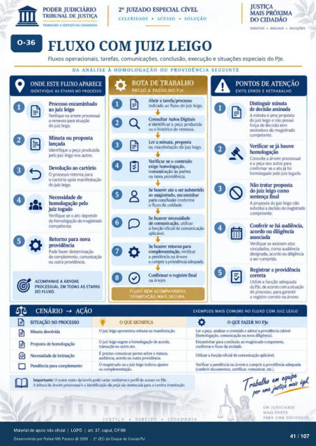

Transcrição automática em português, ainda não revisada. Confira grafia, prazos e termos jurídicos na imagem e no PDF antes de utilizar.
TRABALHO A SERVIÇO DA CIDADANIA
CELERIDADE • ACESSO • SOLUÇÃO
DIREITOS • • SOLUÇÕES
FLUXO COM JUIZ LEIGO
Fluxos operacionais, tarefas, comunicações. conclusão, execução e situações especiais do PJe.
DA ANÁLISE À HOMOLOGAÇÃO OU PROVIDÊNCIA SEGUINTE
ONDE ESTE FLUXO APARECE
IDENTIFIQUE AS ETAPAS NO PROCESSO
Prtx•esso encaminhado ao juiz leigo
Verifique na ár•nre prxessuai a remessa para atuação
do juiz leigo. Minuta ou prormta
Identifique a prcxiuzida juiz leigo nos aum
Devolução ao cartório O prcxesso retorna para
0 cartório manifestação do juiz leigo.
Necessidade de homologação FIO
juiz togado Verifique se o ato depende
magistrajo corn'*tente.
Retorno para nova Ptxie haver determinação
CRJtra
ACOMPANHE A ÁRVORE
PROCESSUAL EM TODAS AS ETAPAS
FLUXO.
CENÁRIO AÇÃO
ROTA DE TRABALHO
PASSO A PASSO NO me irxlicado ao fluxo do juiz leigo.
Consultar Autos Digitais e identificar a prcxiuzida
ou o histrYico remessa. Ler a minuta, Fopsta
nunifestaçáo juiz leigo. Verificar 0 conteúdo
exige comunicação as partes
ou ruwa provi&ncia lxxwer ato a submetido
ao magistrado. encaminhar para conclusão conforme
o fluxo da unidade. houver rrcessidade
de comunicação, utilizar a função oficial
aplicável houver retorno
complement*), verificar a l*ndéncia na árvore
Confirmar 0 registro final na arvore.
FLUXO BEM ACOMPANHADO,
TRAMITAÇÀO MAIS SECURA.
O
PONTOS DE ATENÇÃO
EVITE ERROS E RETRABALHO
Distinguir minuta de decisão assinada
A minuta é uma propsta do juiz leigo e não
força de decisão sem assinatura magistrado
ComFtente. Verificar já houve
Consulte a ár'.•ore prtxessual e a nos autos para
confirmar o ato já foi homologxio juiz tcvdo.
Não tratar propsta do juiz leigo como
final A prcmsta juiz leigo não
substitui a mostrxb Conferir se há audiência,
acordo ou diligência Verifique se existem atos
vinculados. como audiência designada. diligérria
a cumprida. Registrar a providência
Utilize a adequ" do PJe. acordo a situ*)
do prcxesso, para garantir o registro correto na árvore.
SITUAÇÃO NO PR(ESSO
Minuta devolvida Propsta
Necessidxk intimaçào Pendência pra cornpkmento
O QUE SIGNIFICA
O juiz minuta O juiz Aig«e a de
ato. É preciso canunicar partes *'bre a nnuta.
wdiéncia, xortb outra O magistrado ou o bliz leigo iúou
corr*nentaçáo Importante: O exato tarefa variar ctnf«rne o vx•rfil de acesw no Pk.
A kitura da árvore prtxessual e a da sio para a correta tramitaçü'.
EXEMPLOS MAIS COMUNS NO FLUXO COM JUIZ LEIGO
O QUEFAZER NO PJe
a "sar o e adotar a prov&xia caEwl cmwnicaçáo rwva *érria).
Encuninhar para cotúsio 0 fluxo da unid.".
Utiizar a oficia *ável. Verifxar a na árv«e e cumprir a provüiérria
(cmferir dcxumentos, certifwar. comunkar. etc.). Trabalho ed etalZ
UM JUDICIÁRIO
MAIS FORTE
Ver também o infográfico original (página 41)
